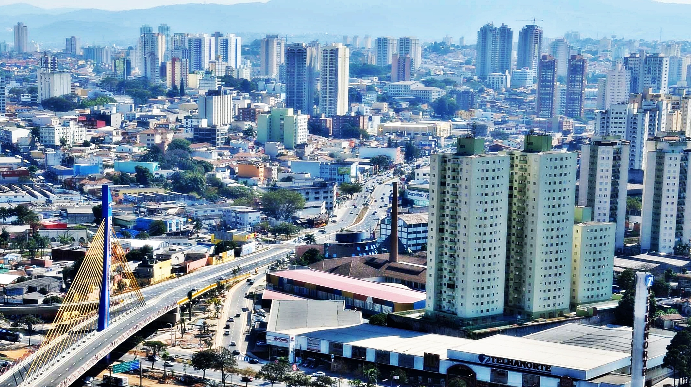

As 10 maiores cidades de São Paulo
O estado de São Paulo é o mais populoso do Brasil e abriga algumas das maiores cidades do país, Essas cidades não são apenas importantes em termos de população, mas também desempenham um papel fundamental no desenvolvimento econômico do estado de São Paulo e do Brasil como um todo. Com suas diversas indústrias e serviços, elas contribuem significativamente para a geração de empregos e para o crescimento da economia. Além disso, essas cidades também oferecem muitas opções de lazer, cultura e entretenimento para seus habitantes e visitantes, tornando-as destinos turísticos populares. Em resumo, as maiores cidades de São Paulo são essenciais para o desenvolvimento e a dinamização do estado e do país.
São Paulo capital

A cidade de São Paulo é a maior cidade do Brasil e a capital do estado de São Paulo. Com uma população estimada em 12,3 milhões de habitantes em 2021, é um importante centro financeiro, comercial e cultural do país. A cidade abriga muitas empresas nacionais e internacionais, além de ser um importante polo de turismo e entretenimento.
Ela oferece muitas opções de lazer e entretenimento para os seus habitantes e visitantes. São diversos parques, museus, teatros, cinemas, restaurantes e shoppings que atraem pessoas de todas as idades. Além disso, a cidade é conhecida por sua vida noturna agitada, com muitos bares, baladas e casas de shows espalhadas por toda a cidade.
São Paulo também é uma cidade muito diversa, com influências de diversas culturas. É possível encontrar bairros com forte presença de imigrantes, como a Liberdade, que abriga a maior comunidade japonesa do mundo fora do Japão, e o Brás, que é conhecido por suas lojas de roupas e acessórios. A cidade também tem uma forte presença da cultura afro-brasileira, com muitos blocos de carnaval e festas populares que atraem milhares de pessoas todos os anos.
Por fim, não podemos deixar de mencionar a importância da cidade de São Paulo na economia do país. Com uma forte presença no setor financeiro e comercial, a cidade é responsável por grande parte do PIB do Brasil. Além disso, a cidade é um importante centro de eventos, recebendo muitas feiras e congressos de diversas áreas, o que movimenta a economia local e atrai visitantes do mundo todo.
Guarulhos
Guarulhos é uma cidade do estado de São Paulo, localizada na região metropolitana da capital. Com uma população estimada em cerca de 1,4 milhão de habitantes, é a segunda maior cidade do estado em população. A cidade é conhecida por abrigar o Aeroporto Internacional de São Paulo, que é um dos mais movimentados do país.
Além do aeroporto, Guarulhos é um importante centro industrial, com muitas empresas de diferentes segmentos instaladas na região. A cidade tem um forte setor de serviços, com muitos comércios e empresas de prestação de serviços espalhadas por toda a cidade. O comércio é forte na cidade, com muitas opções de lojas e shoppings para os moradores e visitantes.
Guarulhos também oferece muitas opções de lazer e entretenimento. São diversos parques, como o Bosque Maia, o Parque Ecológico do Tietê e o Parque Júlio Fracalanza, que são ótimas opções para quem quer fazer uma caminhada, andar de bicicleta ou simplesmente relaxar. A cidade também tem muitos teatros, cinemas e casas de shows, que atraem muitas pessoas todos os anos.
Por fim, é importante destacar que Guarulhos é uma cidade muito diversa, com muitas influências de diferentes culturas. É possível encontrar bairros com forte presença de imigrantes, como o Jardim Tranquilidade, que é conhecido por abrigar muitos imigrantes bolivianos, e o Parque Cecap, que tem uma forte presença da comunidade nordestina. A cidade também tem uma forte presença da cultura afro-brasileira, com muitos eventos e festas populares que atraem milhares de pessoas todos os anos.
Campinas

Campinas é uma cidade do interior do estado de São Paulo, localizada a cerca de 90 km da capital. Com uma população estimada em cerca de 1,2 milhão de habitantes, é a terceira maior cidade do estado. A cidade é conhecida por ser um importante centro de tecnologia e inovação, com muitas empresas de diferentes setores instaladas na região.
Além da tecnologia, Campinas também é um importante centro universitário, com diversas instituições de ensino superior, como a Unicamp, a PUC-Campinas e a Facamp, entre outras. A cidade é conhecida por ser um polo de pesquisa e desenvolvimento, atraindo estudantes e pesquisadores de diferentes partes do país e do mundo.
Além da tecnologia, Campinas também é um importante centro universitário, com diversas instituições de ensino superior, como a Unicamp, a PUC-Campinas e a Facamp, entre outras. A cidade é conhecida por ser um polo de pesquisa e desenvolvimento, atraindo estudantes e pesquisadores de diferentes partes do país e do mundo.
Em resumo, a cidade de Campinas é um importante centro de tecnologia e inovação do estado de São Paulo. Além de ser um polo universitário, a cidade oferece muitas opções de lazer e entretenimento, além de ser muito diversa culturalmente. É uma cidade acolhedora e vibrante, que atrai pessoas de diferentes partes do Brasil e do mundo.
Sao Bernardo do Campo

São Bernardo do Campo é uma cidade do estado de São Paulo, localizada na região metropolitana da capital. Com uma população estimada em cerca de 850 mil habitantes, é a quarta maior cidade do estado. A cidade é conhecida por ser um importante centro industrial, com muitas empresas de diferentes segmentos instaladas na região.
Além do setor industrial, São Bernardo do Campo também tem uma forte presença do setor de serviços, com muitos comércios e empresas de prestação de serviços espalhadas por toda a cidade. O comércio é forte na cidade, com muitas opções de lojas e shoppings para os moradores e visitantes.
São Bernardo do Campo também oferece muitas opções de lazer e entretenimento. São diversos parques, como o Parque Estoril, o Parque da Juventude e o Parque Rafael Lazzuri, que são ótimas opções para quem quer fazer uma caminhada, andar de bicicleta ou simplesmente relaxar. A cidade também tem muitos teatros, cinemas e casas de shows, que atraem muitas pessoas todos os anos.
São Bernardo do Campo é uma cidade muito diversa, com muitas influências de diferentes culturas. É possível encontrar bairros com forte presença de imigrantes, como o bairro italiano do Rudge Ramos e o bairro japonês da Vila Marlene. A cidade também tem uma forte presença da cultura afro-brasileira, com muitos eventos e festas populares que atraem milhares de pessoas todos os anos.
São José dos Campos

São José dos Campos é uma cidade localizada no Vale do Paraíba, no estado de São Paulo. Com uma população estimada em cerca de 720 mil habitantes, é a sexta maior cidade do estado. A cidade é conhecida por ser um importante centro de tecnologia e inovação, com muitas empresas de diferentes setores instaladas na região.
também é um importante centro universitário, com diversas instituições de ensino superior, como o ITA (Instituto Tecnológico de Aeronáutica), a UNESP (Universidade Estadual Paulista) e a Fatec (Faculdade de Tecnologia de São Paulo), entre outras. A cidade é conhecida por ser um polo de pesquisa e desenvolvimento, atraindo estudantes e pesquisadores de diferentes partes do país e do mundo.
São José dos Campos oferece muitas opções de lazer e entretenimento para os seus habitantes e visitantes. São diversos parques, como o Parque da Cidade, o Parque Santos Dumont e o Parque Vicentina Aranha, que são ótimas opções para quem quer fazer uma caminhada, andar de bicicleta ou simplesmente relaxar. A cidade também tem muitos teatros, cinemas e casas de shows, que atraem muitas pessoas todos os anos.
A cidade de São José dos Campos é um importante centro de tecnologia e inovação do estado de São Paulo. Além de ser um polo universitário, a cidade oferece muitas opções de lazer e entretenimento, além de ser muito diversa culturalmente. É uma cidade acolhedora e vibrante, que atrai pessoas de diferentes partes do Brasil e do mundo.
Santo André

Santo André é uma cidade situada no ABC paulista, região metropolitana de São Paulo. Com uma população estimada em cerca de 720 mil habitantes, é a quinta maior cidade da região metropolitana. A cidade é conhecida por sua forte vocação industrial, com muitas empresas de diferentes setores instaladas na região.
Além do setor industrial, Santo André também é uma cidade importante para o setor de serviços, com muitos comércios e empresas atuando na área. A cidade conta com um centro histórico bem preservado, com muitos edifícios e monumentos que remetem ao passado da cidade, como a Igreja de Nossa Senhora do Carmo, a Casa do Olhar Luiz Sacilotto e o Teatro Municipal.
Santo André oferece muitas opções de lazer e entretenimento para os seus habitantes e visitantes. São diversos parques, como o Parque Celso Daniel, o Parque Central e o Parque Regional da Criança, que são ótimas opções para quem quer fazer uma caminhada, andar de bicicleta ou simplesmente relaxar. A cidade também tem muitos shoppings, cinemas e centros culturais, que atraem muitas pessoas todos os anos.
Santo André tem uma forte tradição cultural e histórica, com muitos prédios antigos e monumentos que remetem ao passado da cidade. O centro histórico é um dos destaques da cidade, com muitos edifícios e monumentos preservados, como a Igreja de Nossa Senhora do Carmo, a Casa do Olhar Luiz Sacilotto e a Estação Júlio Prestes. Além disso, a cidade possui um importante museu, o Museu de Santo André Dr. Octaviano Armando Gaiarsa, que conta a história da cidade e de sua região.
Ribeirão Preto

Ribeirão Preto é uma cidade do interior do estado de São Paulo, localizada a cerca de 310 km da capital. Com uma população estimada em cerca de 700 mil habitantes, é uma das maiores cidades do interior paulista e um importante polo econômico e cultural da região.
A economia de Ribeirão Preto é diversificada, com forte atuação nos setores de serviços, comércio, indústria e agronegócio. A cidade é conhecida como a "Capital do Agronegócio" devido à sua forte produção de café e cana-de-açúcar, além de outros cultivos como laranja, limão e milho. Também é um importante polo de produção de etanol e biodiesel.
Ribeirão Preto possui uma ampla infraestrutura de serviços e comércio, com muitos shoppings, lojas, restaurantes e bares. A cidade também é conhecida por sua vida cultural intensa, com muitas opções de lazer e entretenimento, como o Theatro Pedro II, um dos mais importantes teatros do interior de São Paulo, e o Parque Municipal Dr. Luis Carlos Raya, um grande espaço verde com áreas para caminhada, ciclismo e prática de esportes.
Outro destaque de Ribeirão Preto é sua arquitetura, com muitos prédios históricos e monumentos que remetem ao passado da cidade. A Praça XV de Novembro, por exemplo, é um dos principais cartões-postais da cidade, com a Catedral Metropolitana de São Sebastião e o Palácio Rio Branco, sede da prefeitura, ao seu redor. O bairro Campos Elíseos também merece uma visita, com suas ruas arborizadas e casarões antigos que abrigam museus e galerias de arte.
Osasco
Osasco é uma cidade da região metropolitana de São Paulo, localizada a cerca de 18 km da capital. Com uma população estimada em cerca de 700 mil habitantes, é a quinta cidade mais populosa do estado de São Paulo e um importante polo econômico e cultural da região.
A economia de Osasco é diversificada, com forte atuação nos setores de serviços, comércio, indústria e tecnologia. A cidade é conhecida por ser um importante centro industrial, com destaque para os setores de metalurgia, siderurgia, plásticos, borrachas e têxtil. Além disso, Osasco é um polo de tecnologia, com muitas empresas de TI e inovação instaladas na cidade.
Osasco também possui uma ampla infraestrutura de serviços e comércio, com muitos shoppings, lojas, restaurantes e bares. A cidade é conhecida por seus grandes centros de compras, como o Osasco Plaza Shopping, o Shopping União e o SuperShopping Osasco. Além disso, a cidade tem muitas opções de lazer e entretenimento, como o Teatro Municipal Glória Giglio e o Parque Chico Mendes.
Outro destaque de Osasco é sua vida cultural intensa, com muitos eventos e festivais ao longo do ano, como o Festival de Dança de Osasco e a Mostra de Teatro de Osasco. A cidade também tem uma rica história, que pode ser vista em seus museus e monumentos, como o Museu Dimitri Sensaud de Lavaud e a Praça Antonio Menck, onde está a Igreja Matriz de Santo Antônio.
Sorocaba
Sorocaba é uma cidade localizada na região centro-oeste do estado de São Paulo, a cerca de 90 km da capital. Com uma população estimada em mais de 680 mil habitantes, é a quarta cidade mais populosa do estado e um importante polo econômico e cultural da região.
A economia de Sorocaba é diversificada, com forte atuação nos setores de serviços, comércio e indústria. A cidade é conhecida por ser um importante centro industrial, com destaque para os setores de metalurgia, autopeças e construção civil. Além disso, Sorocaba tem se destacado como polo de tecnologia, com muitas empresas de TI e inovação instaladas na cidade.
Sorocaba também possui uma ampla infraestrutura de serviços e comércio, com muitos shoppings, lojas, restaurantes e bares. A cidade é conhecida por seus grandes centros de compras, como o Shopping Iguatemi Esplanada e o Pátio Cianê Shopping. Além disso, a cidade tem muitas opções de lazer e entretenimento, como o Parque da Biquinha e o Zoológico Quinzinho de Barros.
Outro destaque de Sorocaba é sua vida cultural intensa, com muitos eventos e festivais ao longo do ano, como o Festival de Música de Sorocaba e a Feira Nacional de Artesanato e Decoração. A cidade também tem uma rica história, que pode ser vista em seus museus e monumentos, como o Museu da Estrada de Ferro Sorocabana e o Museu Histórico Sorocabano.
Mauá

Mauá é uma cidade localizada na região do ABC Paulista, a cerca de 30 km da capital São Paulo. Com uma população estimada em mais de 470 mil habitantes, é a sétima cidade mais populosa do estado e um importante centro econômico e industrial da região.
A economia de Mauá é baseada principalmente na indústria, com destaque para os setores de metalurgia, química e automobilística. A cidade abriga muitas empresas de grande porte, como a Petrobras e a Mercedes-Benz, e é considerada um importante polo industrial do estado de São Paulo.
Além disso, Mauá possui uma ampla infraestrutura de serviços e comércio, com muitos shoppings, lojas, restaurantes e bares. A cidade é conhecida por seus grandes centros de compras, como o Mauá Plaza Shopping e o Atrium Shopping. Também é possível encontrar muitas opções de lazer e entretenimento, como o Parque da Gruta Santa Luzia e o Teatro Municipal.
Em resumo, Mauá é uma cidade com uma economia forte e diversificada, associada à uma ampla infraestrutura de serviços, comércio e lazer. Sua história rica e tradições culturais atraem muitos visitantes que buscam conhecer mais sobre a região do ABC Paulista.